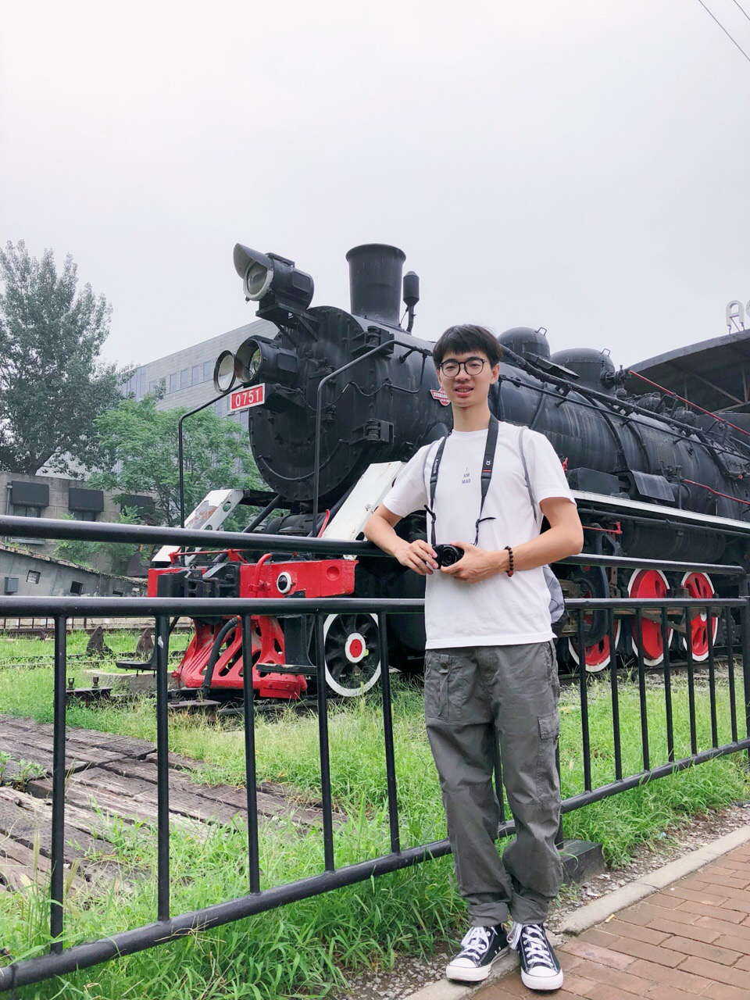
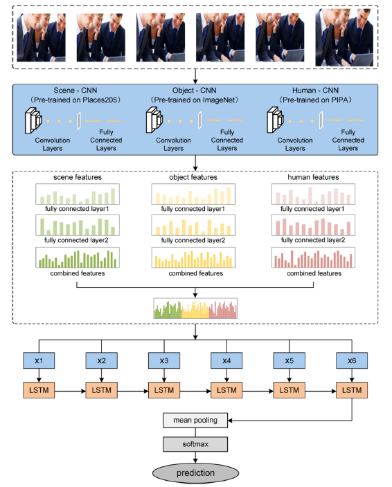
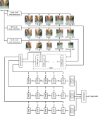
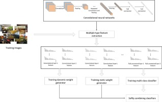
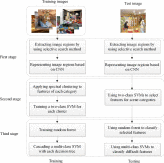

Huadong Tang
Ph.D. Student Beijing / Sydney
|
 |
I am currently a Ph.D. student at University of Technology Sydney (UTS), supervised by Prof. Qiang Wu. Before that, I obtained my Master's degree (MSc Communication Engineering) at Beijing Jiaotong University in July.2018 and obtained my Bachelor's degree (BEng Electronic and Information Engineering) at Nanjing Agricultural University in Jun.2016.
My research interests focus on computer vision and deep learning, especially the semantic segmentation and object detection on the autonomous driving scenarios.
|  |
|  |
Coordinate CNNs and LSTMs to categorize scene images with multi-views and multi-levels of abstraction
Shuang Bai, Huadong Tang, Shan An Expert Systems with Applications，2019. [Paper] |
|  |
Softly combining an ensemble of classifiers learned from a single convolutional neural network for scene categorization
Shuang Bai, Huadong Tang Applied Soft Computing，2018. [Paper] |
|  |
Categorizing scenes by exploring scene part information without constructing explicit models
Shuang Bai, Huadong Tang Neurocomputing, 2018. [Paper] |